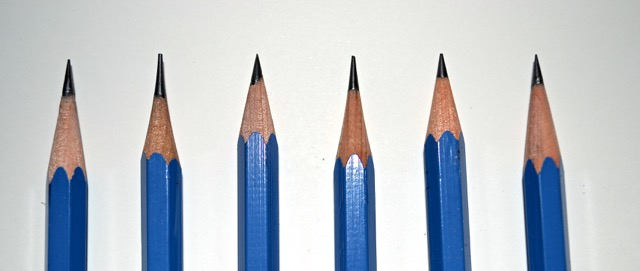

Description of Company
The Chiang Mai International School(CMIS) Pencil Shop was founded by a Nakornpayap International School(NIS) student Bulakorn Thawornrunggit(Captain) who recently(2012) enrolled CMIS to manage the shop easier. The shop is associated with the main stationary store of CMIS but does not have a physical office. Since year 2000, the office has been recieving complaints and reports about stolen and lost pencils from all primary, elementary, and secondary school. This shop was intended to ease the students with an easy access of pencils at a low price due to mass production.
Our products
We sell top quality products at a very low price. Our products are all pencils, used and unused. We mass produce our products and sell them world wide for the cheapest price. WE DO NOT SELL ERASERS/RUBBERS.

| Shipping Time |
| In School Shipment | Nationwide Shipment | International Shipment | |
| Purchase | 5 minutes | 1 day | 3 days | Normal Pencil |
| 10 minutes | 1 day | 3 days | Premium Pencil |
| Rent | 5 minutes | Not Available | Not Available | Normal Pencil |
| 5 minutes | Not Available | Not Available | Premium Pencil |
Shipping
The CMIS Pencil Shop does not have a physical office. Therefore, customers must order it online for the products. Once the contents in the cart is paid, we will ship it to as fast as we can. (Renting Pencils is also possible.)